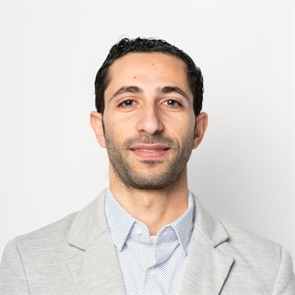

Senior Researcher · Food Protein Chemistry
Bioelectrics Laboratory, Department of Functional Materials and Electronics
Center for Physical Sciences and Technology (FTMC), Vilnius, Lithuania
I am a food chemist studying how processing changes the chemistry and structure of food proteins, and how those changes govern functionality, sustainability and health value.
My work combines non-thermal processing (nanosecond pulsed electric field, power ultrasound and cryogenic processing) with spectroscopic, thermal, colloidal and rheological analysis. I use it to explain protein unfolding, Maillard glycation, protein–polyphenol binding, and the stability of emulsions, gels, films and bioactive delivery systems made from plant and dairy proteins. I increasingly pair experiments with molecular dynamics simulation and docking.
I trained and published in China, Europe and the USA, including a USDA-funded postdoctoral appointment in the Department of Food Science at The Pennsylvania State University.
How pulsed electric fields and power ultrasound alter the structure of casein, serum albumin, β-lactoglobulin and plant proteins.
Binding of polyphenols such as EGCG and flavonoids to food proteins, measured by spectroscopy and modelled by docking and MD.
Protein-stabilized colloids for structure, stability and delivery of bioactives such as β-carotene.
Casein and protein-based films with tunable mechanics, and edible coatings that extend shelf-life.
Plant protein extraction and structuring, and side-stream valorization into clean-label ingredients.
Nano-emulsions of bio-derived phase change materials for controlled heat storage.
Bioelectrics Laboratory, Dept. of Functional Materials and Electronics, FTMC, Vilnius, Lithuania
Department of Food Science, The Pennsylvania State University, USA
Department of Food Sciences, Faculty of Agriculture (Saba Basha), Alexandria University, Egypt
FTMC, Vilnius, Lithuania
Department of Food Sciences, Alexandria University, Egypt
FTMC and Vilnius University, Lithuania · Lithuanian Government PhD Scholarship
Thesis: Effects of Pulsed Electric Field on the Structural and Techno-Functional Properties of Proteins
Huazhong Agricultural University, Wuhan, China · China Scholarship Council Scholarship
Thesis: Effects of Ultrasound Emulsification on the Physicochemical Properties of Soy Protein Isolate-Stabilized Emulsions
Faculty of Agriculture (Saba Basha), Alexandria University, Egypt
Full and current list on Google Scholar. Highly Cited = Web of Science Highly Cited Paper.
No publications match that search.
I welcome enquiries about collaboration, student projects and joint funding proposals in food protein chemistry, non-thermal processing and sustainable materials.
Center for Physical Sciences and Technology (FTMC), Vilnius, Lithuania · Languages: Arabic (native), English (fluent)